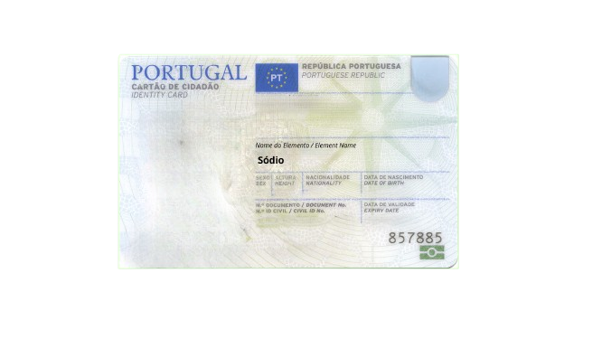
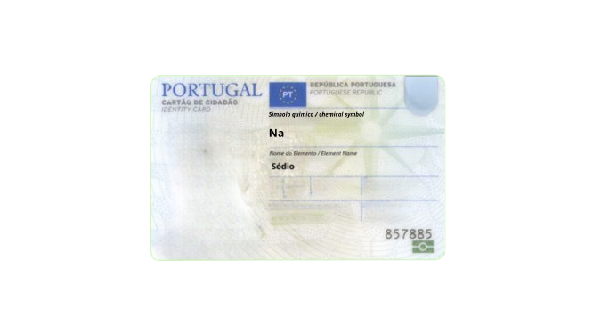
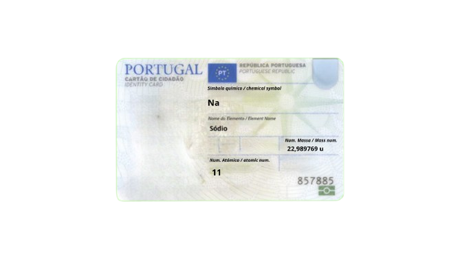
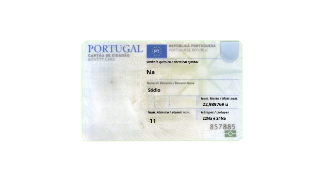
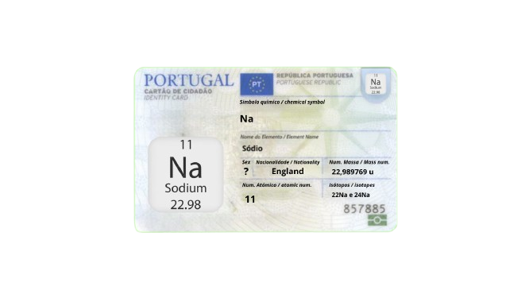

Apresentação sobre o Sódio
Nome do Elemento: Sódio
O sódio é um elemento químico com o número atômico 11. É um metal alcalino, altamente reativo, e é encontrado na natureza.

Símbolo Químico: Na
O símbolo químico do sódio é "Na", ele vem do latim "Natrium". Este elemento é conhecido pela sua reatividade e é bastante utilizado na indústria.

Número Atômico: 11
O número atômico do sódio é 11, o que significa que ele possui 11 prótons no seu núcleo. Isso determina as suas propriedades químicas e a sua posição na tabela periódica.
.png)
Número de Massa: Aproximadamente 23
O número de massa do sódio é aproximadamente 23, o que se refere à soma dos prótons e nêutrons do seu núcleo.

Isótopos do Elemento
O sódio possui um isótopo estável, o sódio-23. Outros isótopos, como o sódio-22, são radioativos e têm aplicações na medicina e na pesquisa científica.

Cartão Completo

História do Elemento
O sódio foi descoberto em 1807 pelo químico inglês Humphry Davy. Ele isolou o sódio pela primeira vez utilizando o processo de eletrólise, que permitiu a separação dos elementos químicos. Esta descoberta teve um impacto significativo na química dos metais alcalinos e na compreensão dos elementos.
Aplicações do Elemento
- Indústria Química: O sódio metálico é utilizado na fabricação de compostos como hidróxido de sódio (soda cáustica) e peróxido de sódio.
- Produção de Sabões e Detergentes: Sais de sódio, como o lauril sulfato de sódio, são ingredientes comuns em produtos de limpeza.
- Processos Biológicos: Essencial para o funcionamento dos sistemas nervoso e muscular, sendo fundamental na transmissão de impulsos nervosos.
- Indústria Alimentícia: O cloreto de sódio (sal de cozinha) é bastante utilizado na conservação de alimentos.
Características/Curiosidades do Elemento
- Metal Leve: O sódio é um metal muito leve, com densidade inferior à da água.
- Reatividade: Extremamente reativo, especialmente com água, resultando em uma reação violenta que produz gás hidrogénio e calor.
- Essencial para a Vida: O sódio desempenha um papel crucial na manutenção do equilíbrio de fluidos e na regulação da pressão arterial no corpo humano.
- Transmissão de Impulsos Nervosos: Ajuda na propagação de impulsos eléctricos entre as células nervosas, sendo vital para o sistema nervoso.